Discrepancies in asset declaration records of election candidates
An exploration of declared assets of Lok Sabha 2024 Election candidates.
Introduction
All candidates that contest elections are required to file an affidavit. Among many other details1 the said affidavit contains details of a candidate’s assets. These are listed as movable and immovable assets. The Election Commission of India (ECI) makes these filed affidavits available on this portal.
If one does bother to look at the affidavits on the ECI portal they will soon realise that these are mostly hand written in various languages. This annoys lazy people like me who want stuff in nice tidy tables to explore and analyse. Fortunately, the people at the Association for Democratic Reforms have already gone through this ordeal. One can look up details of the affidavit filed by each candidate on the website. They have arranged stuff in nice tidy tables THAT CANNOT BE EXPORTED TO CSV OR OTHER ANALYSES READY FORMAT. So, I half-heartedly thank the nice ADR people and scrape these details.
Curious Discrepancies
I am interested testing the Benford’s law2 on the declared values of total movable3 and immovable assets. But before I could do that I stumbled onto something curious. To explain what I find curious I have to show you how these details are recorded. Consider the following tables.
| Sr | List of Movable Assets | Self | Spouse | Dependent 1 | Total |
|---|---|---|---|---|---|
| 1 | Cash | 1,00,000 | 2,00,000 | Nil | 3,00,000 |
| 2 | Motor Vehicle | 5,00,000 | Nil | Nil | 5,00,000 |
| 3 | Diamonds | Nil | Nil | 10,00,000 | 10,00,000 |
| 4 | Total As per Affidavit | 6,00,000 | 2,00,00 | 10,00,000 | 18,00,000 |
| 5 | Totals(Calculated sums of values) | 6,00,000 | 2,00,00 | 10,00,000 | 18,00,000 |
| Sr | List of Immovable Assets | Self | Spouse | Dependent 1 | Total |
|---|---|---|---|---|---|
| 1 | House | 1,00,00,000 | 20,00,000 | Nil | 1,20,00,000 |
| 2 | Farm | 50,00,000 | Nil | 2,00,000 | 52,00,000 |
| 3 | Factory | Nil | Nil | Nil | Nil |
| 4 | Total Current Market value as per Affidavit | 1,50,00,000 | 20,00,00 | 2,00,000 | 1,72,00,000 |
| 5 | Totals(Calculated sums of values) | 1,50,00,000 | 20,00,00 | 2,00,000 | 1,72,00,000 |
There are two kinds of discrepancies that I have observed. First, for some candidates the final total values for rows 4 and 5 differ by some amount. See for example see movable assets for this profile, or this. If our dummy tables suffered from such a discrepancy we would find that the Total as per Affidavit and Totals (Calculated as sums of values) would have different values in the last column (Total). The fifth row is calculated by ADR, though I did not cross check for all such cases, I believe they did not make an error in adding numbers up. So it must be the case that the totals in the affidavit are incorrect. The second discrepancy is even more annoying. In several cases I found that a candidate will have multiple assets listed with values under self, spouse, dependent, or all, and yet the row 4, total of assets as per affidavit, will have the value “Nil” or “Rs 0”. See for example immovable assets table for this profile, or movable assets table of this profile. For the sake of convenience I will refer to the first type of discrepancies as CAT1 erros and the second type as CAT2 errors.
Interestingly, the Returning Officer is only requred to check the completeness of the affidavit, so says the Handbook for Candidates 2023. Though the purpose of these affidavits are disclosure, and that the ECI is not required to verify if the details of these affidavit are correct, one4 can expect to have the totals of values to be accurate. You would imagine that these might be rare issues, you would be wrong. Even if we let go of minor CAT1 errors, how does one get away with declaring that they have no (“Nil”) movable assets after listing various movable assets worth lakhs or rupees? Not annoyed yet? Well, how about declaring that the market value of their total immovable assets is rupees 0 after listing multiple immovable assets worth lakhs of rupees? How does this slip through? Are the opposing candidates sleeping? Pointing such things out can be worthwhile for them.
A closer look
The easiest thing to notice is that a little less than 50% (3948, i.e. 47.3% ) of all the filed affidavits have one or more type of discrepancies. This is too big a number to ignore. Once can say it is some relief that 2959 of the 3948 (~75%) affidavits have only CAT1 error. It is possible that some of these are simple minor mistakes in claculation. Say the total is 3,75,755 and the affidavit is 3,75,752. We will later explore more about such errors. The remaining 989 (681+308) affidavits could be a matter of little more concern. These are where candidates declared various assets with their respective values but have shown the total as either Nil or 0. Do they mean to say I own all these assets but its total value is 0? Or that in total I own nothing?
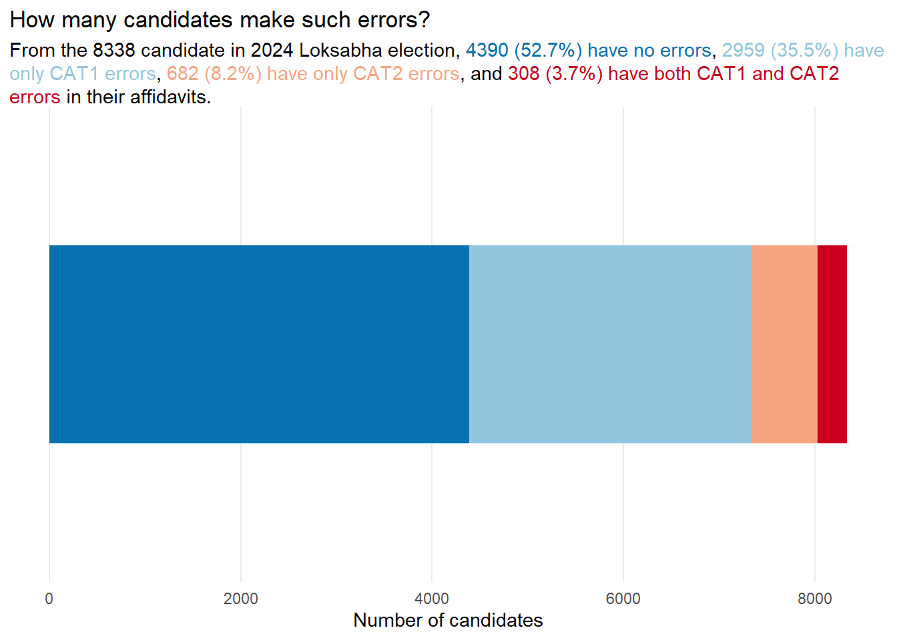
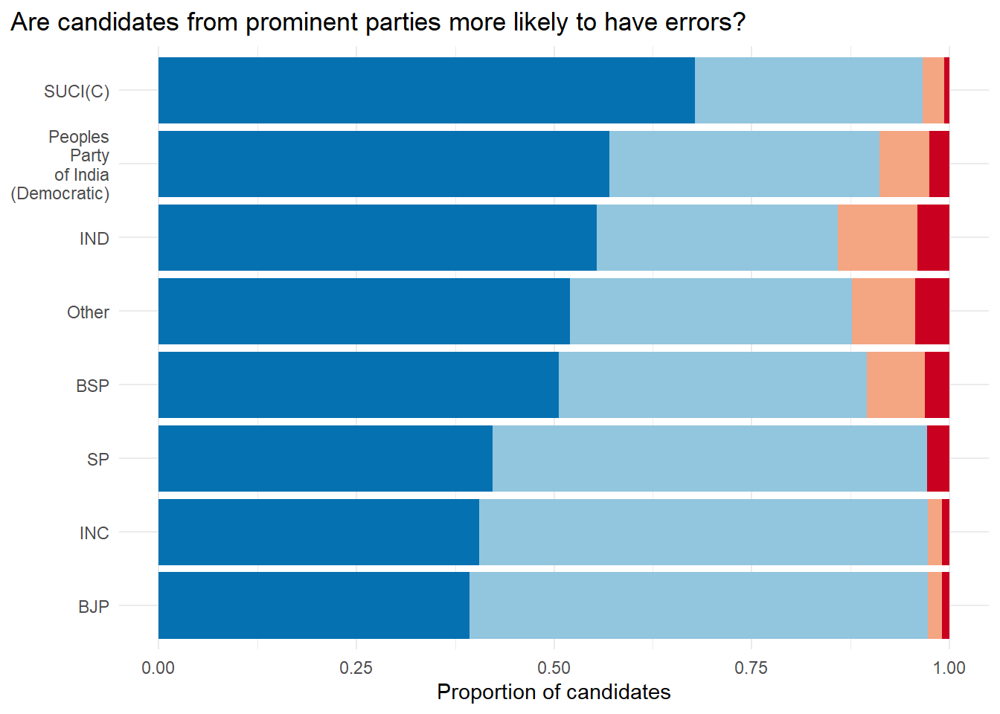
Besides independent candidates, 745 parties5 had their candidates contesting the Loksabha 2024 election. In Figure 2 we see that the three largest parties, the BSP, the BJP, and the INC, have higher proportions of candidates with a CAT1 and/or CAT2 error. Question is could these be chance variations? Another point to note is that most of CAT2 erros are seen in independnet candidates and candidates from smaller parties. The only large party that stands out with the serious CAT2 errors is the BSP.
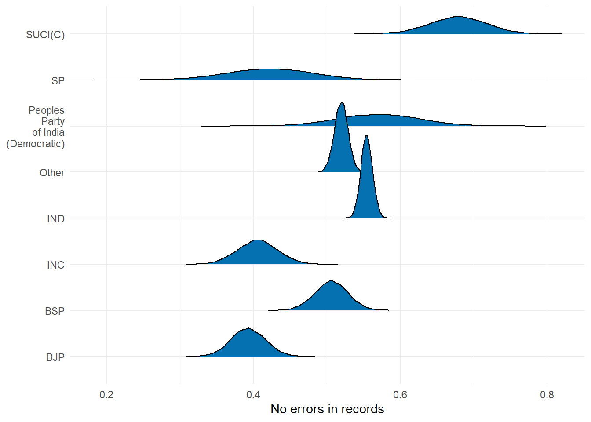
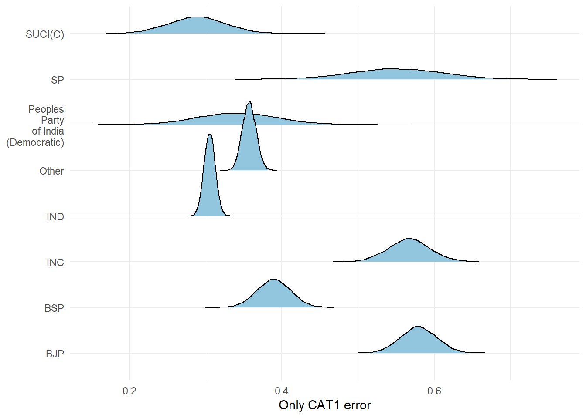
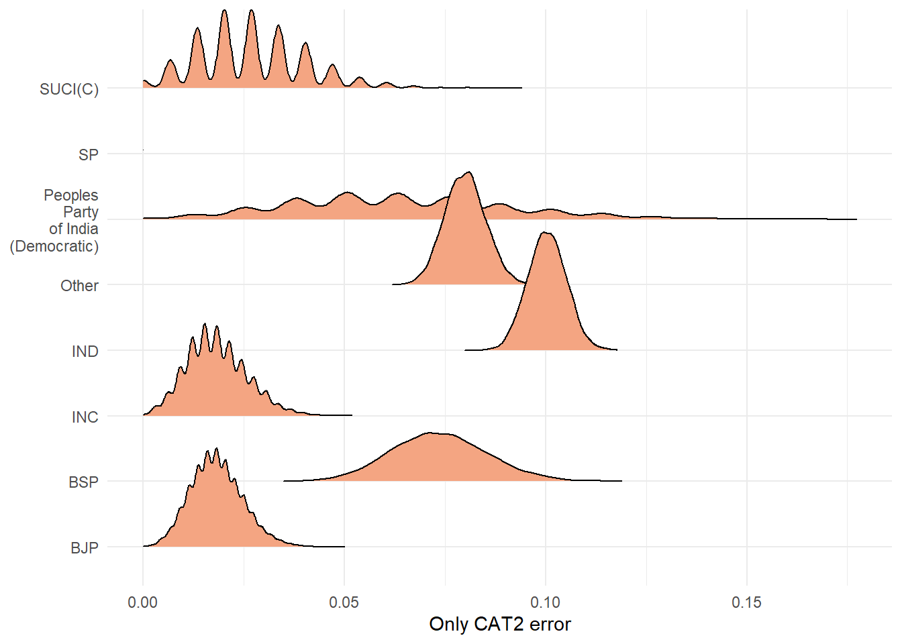
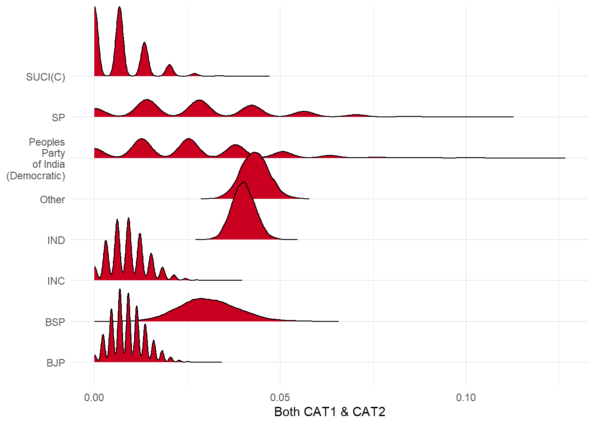
The distributions above represent the range of possibilities in each error category for each party. Whitout getting too technical, one can say that independent candidates are in some systematic way different from candidates from major parties. I wonder if these errors are genuine clerical mistakes. While it is difficult to establish that for CAT2 errors, there is a way that can provide us some insight into CAT1 errors.
If we believe that a CAT1 mistake is a genuine calculation or clerical error, we would be reasonable on expecting that the values are overestimated or underestimated randomly. So, a number will be higher or lower than the actual value by equal chance, this can be checked. I can comapre the totals provided by ADR and the totals in the affidavit. Moreover, we dont expect the deviations to be huge from the true value.
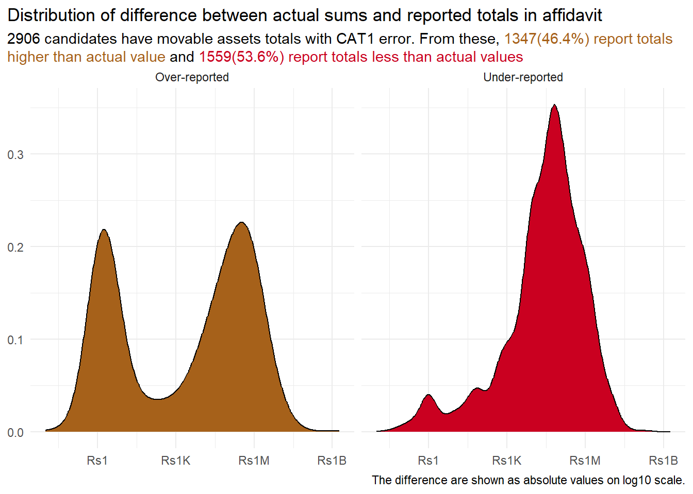
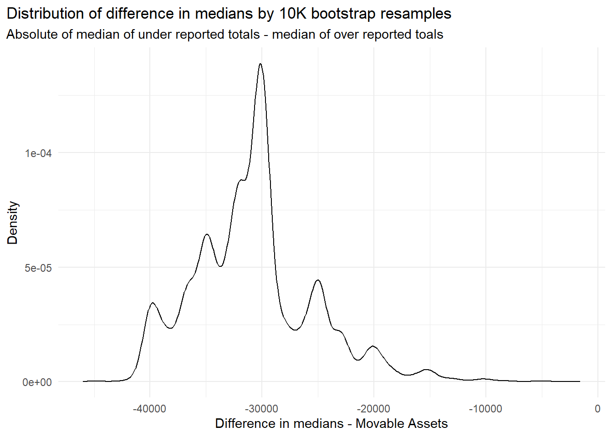
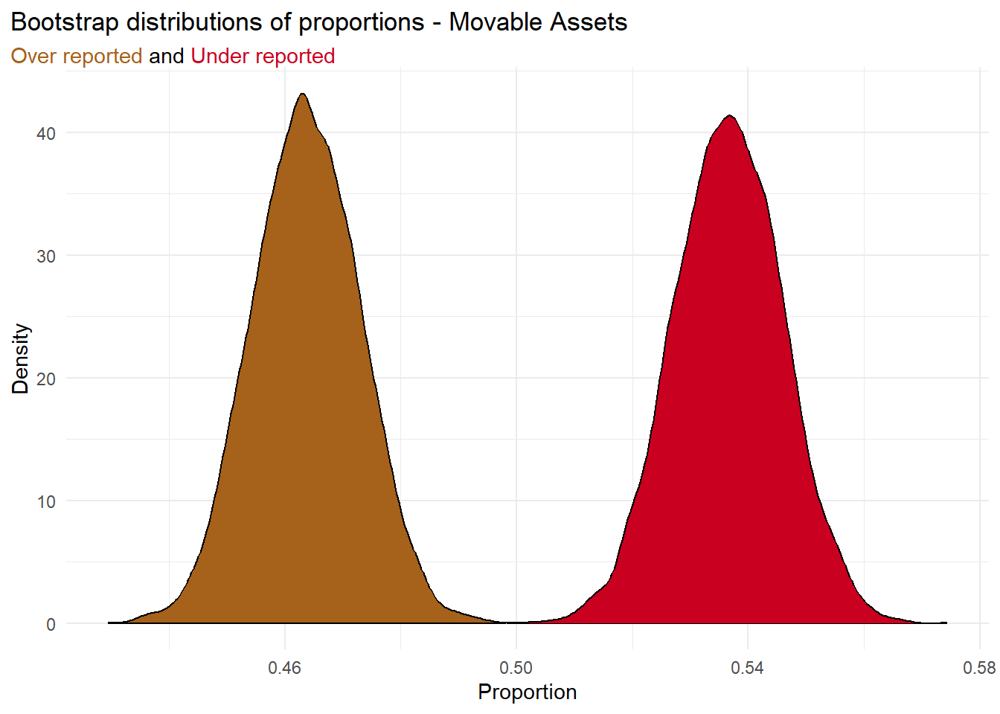
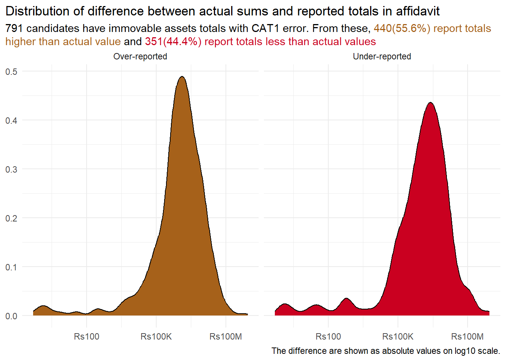
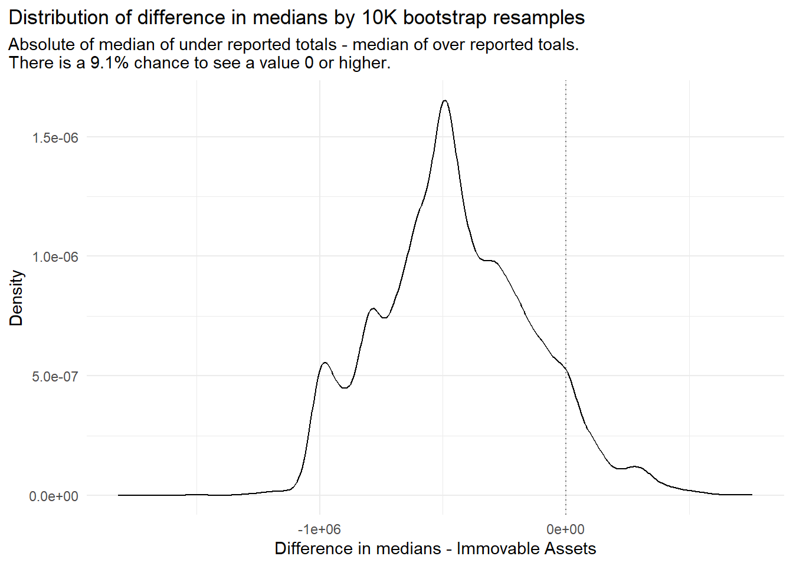
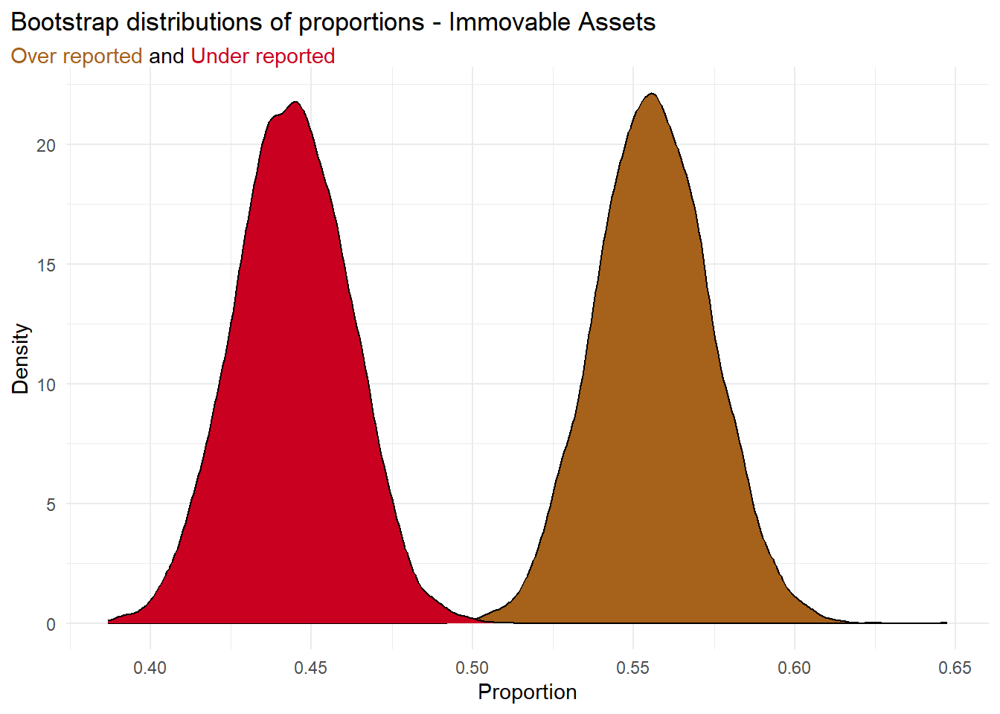
Do candidates over or under report by a similar amount? Well, if you are wondering about immovable assets then the answer is a yes, seem very likely by looking at Figure 10. However, Figure 7 for movable assets tells a different story. For movable assets, within those that end up over reporting their total movable assets, there is a substantial subset that over reports by a small amount. Then there are those that over estimate by a very large amount. This is not the case for people that under report their moveable assets. Reading this along with Figure 8 tells us that the values by which people over report and under report are sinificantly different for movable assets. Figure 11 makes us doubt if the same can be said about immovable assets.
Back to Benford
I came across the Benford’s law while reading Ellenberg (2014). The book mentions an interesting example where two researchers were able to sniff out election rigging by looking at vote counts trailing digits and using Benford’s law. Their work can be read from Beber and Scacco (2009) and Beber and Scacco (2009). The bottom line is according to this law for several kinds of numbers we can expect the last trailing digits to be uniformly distributed between 0 to 9. Many applications of this exists from trade number to election counts. Naturally I was looking for ways to test this out. Since I trust that the declared assets, movable and immovable, by many candidates would be not true, this makes for an excellent case. Pair this with benford’s law and Fonseca and Superti (2024) we expect digits to end morer in 0 and 5, or at least not have a uniform distribution as beford would have it. Here are the results of the test on movable and immovable assets total declared in candidate affidavit for those with no error.
| last_digit | n |
|---|---|
| 0 | 2622 |
| 4 | 214 |
| 7 | 214 |
| 5 | 212 |
| 9 | 211 |
| 2 | 198 |
| 6 | 179 |
| 8 | 178 |
| 3 | 161 |
| 1 | 156 |
| last_digit | n |
|---|---|
| 0 | 2478 |
| 5 | 22 |
| 7 | 21 |
| 8 | 20 |
| 4 | 18 |
| 6 | 18 |
| 2 | 14 |
| 3 | 13 |
| 1 | 8 |
| 9 | 7 |
References
Footnotes
I say “many other details” because I don’t know what else is required to be declared. I did not pay attention. If you are the curious type look for Form 26 here↩︎
I will get to this in a minute. Don’t worry if you do not know what it is.↩︎
I know the accounts and finance gang have neat definitions of what are movable and what are immovable assets. For now it is enough to understand that movable assets are those that you can run away with or access it on the go, like cash, car, jewelry, bank deposits, etc. Immovable assets are not so handy on the run, like house, land, your pool. Does that mean club and gym memberships are immovable assets?↩︎
These are silly naive people with such high expectations. Great Expectations.↩︎
For the sake of ease, I have clubbed all parties with less than 54 candidates into the category “Others”.↩︎